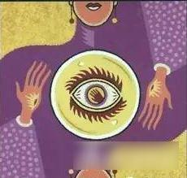
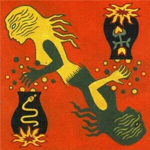
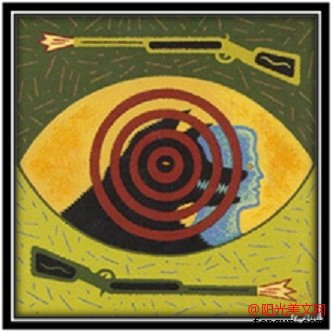

Game Rule

See rule
See rule
Werewolf: Werewolf need to kill all village
Village: Village need to find all werewolves and get them out!
1. Seer 
Seer information
Features: The seer can verify the identity of a person as a good person or a werewolf at night.
The seer is an important village team role in Werewolf that appears in the majority of games played. Seers perform their action at night, using see
Recommendation: Weresolves seer
2. Witch 
Witch information
Features:The witch has a one potion and one posion
This role, while first and foremost taking on all the elements of a regular Villager throughout the game, also has the additional powers of one potion and one poison, which they may use at any point throughout the game. When the Witch is added, the Moderator will wake them up separately during the night with, “The Witch comes awake…” and follows this with “The Witch brings someone back to life.” and “The Witch poisons someone.” The Witch will then point to the person they want to poison or bring back to life. While the Witch can only use their potion and poison once, each action must be said each night to retain anonymity as to what has been done. They can only use one per evening until both are gone, and have the ability to save them until a point in the game they deem fit.
Recommendation: Werewolf Witch
3. Hunter 
Hunter information
Features:If hunter be killed, It can kill any people
You are a hunter. Once per game, you may kill another player with kill
Recommendation: Agua Fresca